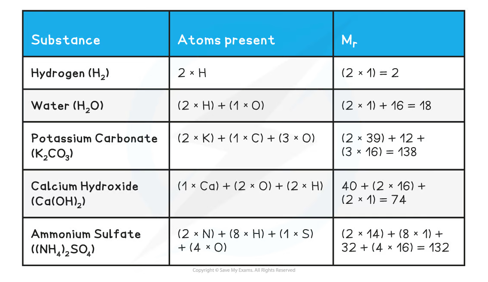
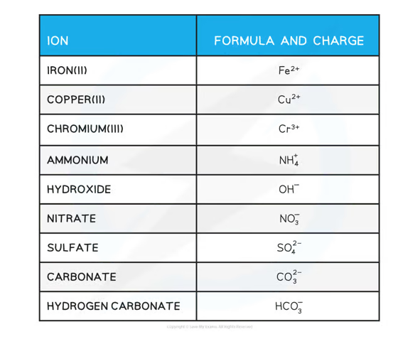
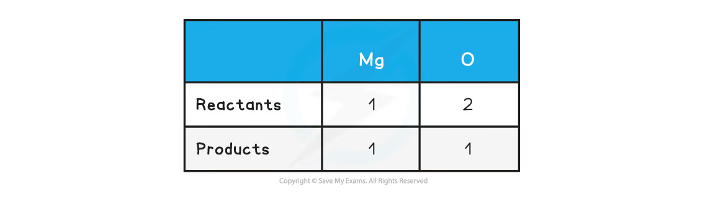
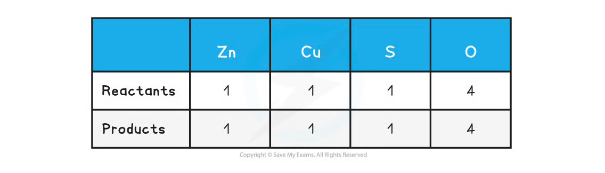
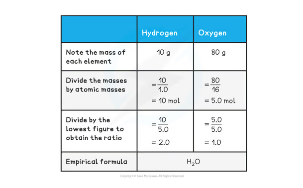
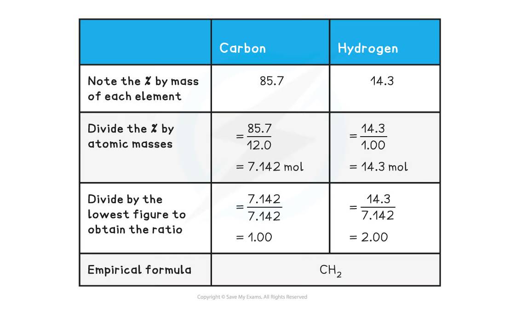
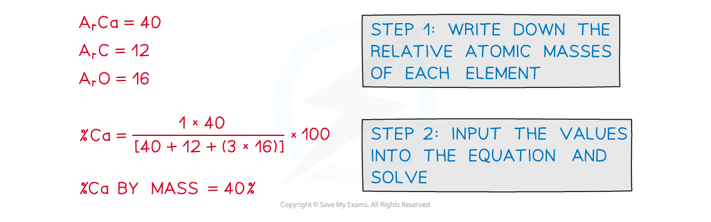

1.1 Formulae and Equations
Formulae, moles, chemical equations and empirical formulae
1.1 Formulae and Equations
本页对应 1.1 Formulae - Equations.pdf.pdf，整理 Edexcel International A Level Chemistry 中 formula writing、relative mass、moles、chemical equations、ionic equations 以及 formula calculations。专业词汇保留 English，calculation 按 exam method 展开。
Learning objectives
学完本页后，你应该能够：
- distinguish atom、ion、molecule、compound 和 empirical formula；
- calculate relative atomic mass
Aᵣ、relative formula massMᵣ和 amount of substance； - use the Avogadro constant、molar mass、molar gas volume and
pV = nRT； - write correct chemical formulae with state symbols and balance equations；
- convert a molecular equation into a net ionic equation；
- determine empirical formula、molecular formula、percentage composition and water of crystallisation。
1.1.1 Formulae and relative mass
Key definitions
- Atom：an electrically neutral particle containing protons、neutrons and electrons。
- Ion：a charged particle formed when an atom or group of atoms gains or loses electrons。
- Molecule：two or more atoms covalently bonded together。
- Compound：a substance containing two or more different elements chemically combined in fixed proportions。
- Empirical formula：the simplest whole-number ratio of atoms in a compound。
- Molecular formula：the actual number of each type of atom in one molecule。
Aᵣ compares the mean mass of an atom of an element with 1/12 of the mass of one carbon-12 atom. Mᵣ is the sum of the relative atomic masses of all atoms shown in a formula：
\[ M_r=\sum (\text{number of atoms}\times A_r) \]

For example：
\[ \begin{aligned} M_r(\ce{H2O})&=(2\times1.0)+16.0=18.0\\ M_r(\ce{K2CO3})&=(2\times39.1)+12.0+(3\times16.0)=138.2 \end{aligned} \]
Writing ionic formulae
For an ionic compound, the total positive charge must equal the total negative charge. The simplest ratio is used：
\[ \ce{Ca^{2+} + 2Cl^- -> CaCl2} \]
Use brackets when a polyatomic ion occurs more than once：
\[ \ce{Al^{3+} + 3OH^- -> Al(OH)3} \]
The subscript belongs to the formula, whereas a coefficient belongs to the equation. Do not change subscripts when balancing an equation。

1.1.2 The mole and Avogadro calculations
One mole contains the Avogadro constant of particles：
\[ N_A=6.02\times10^{23}\ \mathrm{mol^{-1}} \]
The amount of substance n can be calculated from mass or particle number：
\[ n=\frac{m}{M_r},\qquad n=\frac{N}{N_A},\qquad N=nN_A \]
where m is mass in g, Mᵣ is molar mass in g mol⁻¹, and N is the number of particles. Numerically，molar mass has the same value as Mᵣ but carries units of g mol⁻¹。
Worked example：mass to particles
Calculate the number of molecules in 18.0 g of water。
\[ n(\ce{H2O})=\frac{18.0}{18.0}=1.00\ \mathrm{mol} \]
\[ N=1.00\times6.02\times10^{23}=6.02\times10^{23}\ \text{molecules} \]
Gas calculations
At room temperature and pressure，the molar gas volume is often taken as approximately 24.0 dm³ mol⁻¹：
\[ n=\frac{V}{V_m},\qquad V=nV_m \]
Always keep units consistent. If using the ideal gas equation，use V in m³ and p in Pa：
\[ pV=nRT \]
where R = 8.31 J mol⁻¹ K⁻¹ and T must be in kelvin：
\[ T(\mathrm{K})=T(^{\circ}\mathrm{C})+273.15 \]
Calculation routine
- Write the chemical equation and identify the required substance。
- Convert every measurement into compatible units。
- Calculate moles using
n = m/Mᵣ、n = cV、n = V/Vmorn = pV/RT。 - Apply the mole ratio from the balanced equation。
- Convert to the requested quantity and give units、significant figures and a sensible answer。
1.1.3 Full equations and ionic equations
State symbols
Use state symbols to show the physical state of each species：
| Symbol | Meaning |
|---|---|
(s) |
solid |
(l) |
liquid |
(g) |
gas |
(aq) |
aqueous solution |
Balancing equations
A chemical equation must conserve atoms and overall charge. Balance it by changing coefficients in front of formulae；never alter the subscripts inside a formula。
Example 1：magnesium oxide
Start with the skeleton equation：
\[ \ce{Mg(s) + O2(g) -> MgO(s)} \]
Count atoms on both sides，then balance magnesium and oxygen：

\[ \boxed{\ce{2Mg(s) + O2(g) -> 2MgO(s)}} \]
The coefficients show the mole ratio 2 : 1 : 2。
Example 2：zinc and copper(II) sulfate
\[ \ce{Zn(s) + CuSO4(aq) -> ZnSO4(aq) + Cu(s)} \]
The equation is already balanced. A count table is a useful check when polyatomic ions are present：

Net ionic equations
An ionic equation includes only the species that actually change. The standard method is：
- write the balanced molecular equation with state symbols；
- split strong aqueous electrolytes into ions；
- cancel spectator ions；
- check both atoms and total charge。
For the displacement reaction：
\[ \ce{Zn(s) + CuSO4(aq) -> ZnSO4(aq) + Cu(s)} \]
the complete ionic equation is：
\[ \ce{Zn(s) + Cu^{2+}(aq) + SO4^{2-}(aq) -> Zn^{2+}(aq) + SO4^{2-}(aq) + Cu(s)} \]
SO₄²⁻ is a spectator ion，so the net ionic equation is：
\[ \boxed{\ce{Zn(s) + Cu^{2+}(aq) -> Zn^{2+}(aq) + Cu(s)}} \]
Common net ionic equations include：
| Reaction type | Net ionic equation |
|---|---|
| Neutralisation | \ce{H+(aq) + OH-(aq) -> H2O(l)} |
| Carbonate + acid | \ce{2H+(aq) + CO3^{2-}(aq) -> H2O(l) + CO2(g)} |
| Precipitation | \ce{Ba^{2+}(aq) + SO4^{2-}(aq) -> BaSO4(s)} |
| Metal displacement | \ce{Zn(s) + Cu^{2+}(aq) -> Zn^{2+}(aq) + Cu(s)} |
Ionic equations must balance in atoms and charge. A neutralisation equation has total charge +1 + (-1) = 0 on the left and no charge on the water product。
1.1.4 Calculating formulae
Empirical formula from masses
Use this four-step method：
- write the mass of each element；
- divide each mass by its
Aᵣto obtain moles； - divide all mole values by the smallest value；
- multiply to obtain a whole-number ratio if necessary。
For a compound containing 10.0 g hydrogen and 80.0 g oxygen：

The ratio is H : O = 2 : 1，so the empirical formula is H₂O。
For 85.7% carbon and 14.3% hydrogen，assume 100 g of compound：

The ratio is C : H = 1 : 2，so the empirical formula is CH₂。
Molecular formula
The molecular formula is a whole-number multiple of the empirical formula：
\[ \text{factor}=\frac{M_r(\text{compound})}{M_r(\text{empirical formula})} \]
Then multiply every subscript in the empirical formula by the factor. For example，if the empirical formula is CH₂ and the molecular Mᵣ is 42：
\[ M_r(\ce{CH2})=12.0+(2\times1.0)=14.0,\qquad \text{factor}=\frac{42}{14}=3 \]
Therefore，the molecular formula is C₃H₆。
Percentage composition by mass
The percentage by mass of an element is：
\[ \%\text{ by mass}=\frac{\text{total mass of the element in one formula unit}}{M_r(\text{compound})}\times100 \]
For calcium carbonate：
\[ \%\ce{Ca}=\frac{40.1}{40.1+12.0+(3\times16.0)}\times100\approx40.0\% \]

Water of crystallisation
A hydrated salt contains a fixed number of water molecules in its crystal lattice：
\[ \ce{CuSO4.xH2O(s) ->[heat] CuSO4(s) + xH2O(g)} \]
To find x：
- calculate the mass of water lost；
- calculate moles of anhydrous salt and water；
- divide by the smaller number of moles；
- use the simplest whole-number ratio as
x。
Worked example
10.0 g of \ce{CuSO4.xH2O} is heated and leaves 5.59 g of anhydrous \ce{CuSO4}。
\[ m(\ce{H2O})=10.0-5.59=4.41\ \mathrm{g} \]
Using Mᵣ(\ce{CuSO4}) = 159.6 and Mᵣ(\ce{H2O}) = 18.0：
\[ n(\ce{CuSO4})=\frac{5.59}{159.6}=0.0350,\qquad n(\ce{H2O})=\frac{4.41}{18.0}=0.245 \]
The ratio is approximately 1 : 7，so the formula is \ce{CuSO4.7H2O}。
Common mistakes and exam checklist
Source note
本页面对应：Note per Chapter/Note per Chapter/1.1 Formulae - Equations.pdf.pdf。页面中的 relative-mass table、common-ion table、atom-count tables、empirical-formula tables 和 percentage-composition figure 均从该 PDF 的 embedded images 独立提取，并转换为 RGB white-background PNG 后保存到 assets/notes/formulae-equations/。